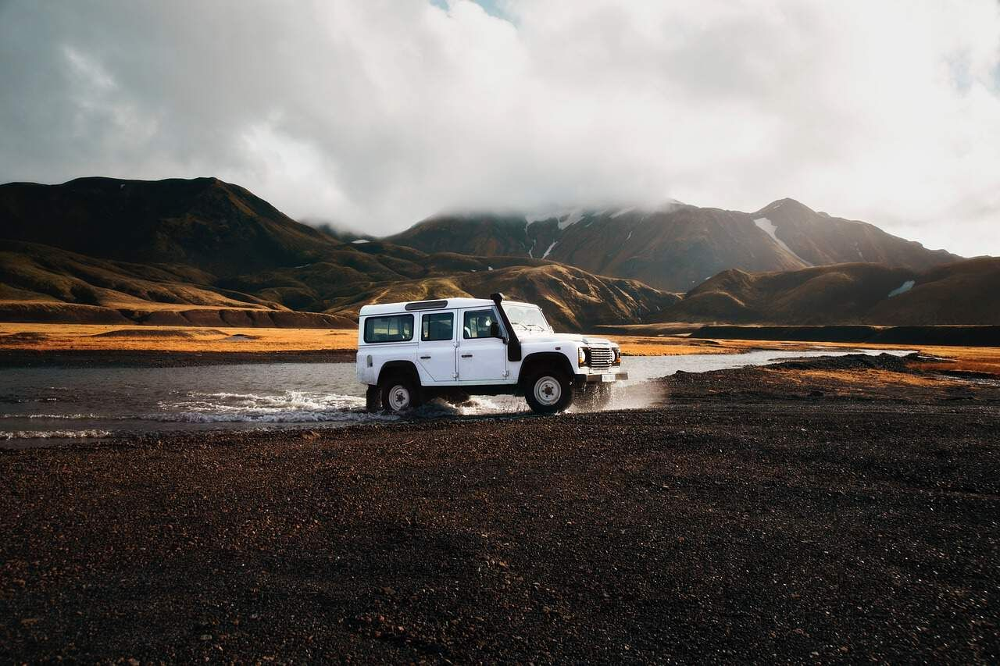
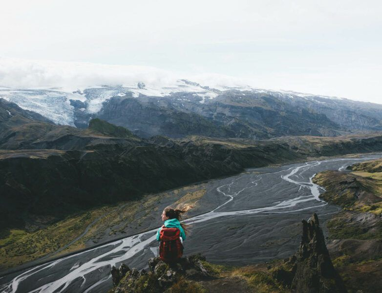

Glacier adventure
Thórsmörk tour
Duration: 2 day tour
Thórsmörk is a mountain ridge in Iceland that was named after the Norse god Thor (Þór). It is situated in the south of Iceland between the glaciers Tindfjallajökull and Eyjafjallajökull. The name "Thórsmörk" properly refers only to the mountain ridge between the rivers Krossá, Þröngá, and Markarfljót, but is sometimes used informally to describe a wider area that includes the region between Thórsmörk and Eyjafjallajökull. Thórsmörk is one of the most popular hiking areas in Iceland.

On this 2-Day Þórsmörk overnight tour you will explore the valley of mighty Thor, the Thunder God. You will enjoy the wilderness of outstanding panoramic views whilst breathing fresh mountain air.
Day 1
Departing Hvolsvöllur, we head into Þórsmörk, driving towards Eyjafjallajokull, the famous 2010 erupting volcano. Super jeep driving is through extreme conditions, reaching the famous outlet glacier of Gígjökull where the landscape changed so dramatically during the eruption.
Crossing unbridged, glacial outflow rivers, we reach Þórsmork, after a hugely exciting travel adventure.
Húsadalur is our overnight accommodation, either in a tent or in a mountain hut (upgrade). For dinner we will have delicious traditional lamb. We will spend the night sharing stories and enjoying the remoteness, beauty and tranquility of Þórsmörk.
Day 2
After a nice breakfast, we continue exploring the Þórsmörk valley. We drive around the area, taking a look and exploring some of the magical, water-cut canyons on the lower slopes of Eyjafjalljokull volcano.
Exiting Þórsmörk, Seljalandsfoss waterfall will be experienced (and walked behind if you dare!) before travelling out to the Atlantic coast and roaming across its extensive black sand beaches.
The itinerary is quite flexible, depending on conditions and group wishes.
You are then returned to your hotel (or on to Reykjavík).
An Ice Walk/Climb on Sólheimajökull or snowmobiling on Mýrdalsjökull can be added if this tour is done as private.
| DEPARTURE/RETURN LOCATION | Base Camp, Dufþaksbraut 55, Hvolsvöllur or free pick-up at nearby hotels in the Hella / Hvolsvöllur area. |
| DEPARTURE TIME | 09:00 AM from the Glacier Office. Swing by a little earlier for a nice cup of coffee! We can also pick you up at your accommodation in the area from 08:45- 9:15 (depending on your location). |
| DURATION | 2 days - 1 night |
| WEAR | Comfortable clothing, hiking shoes and warm clothes according to this area’s weather forecast! |
| GROUP SIZE | There is a minimum of 6 participants for this tour. Please see booking widget. If you want to book this tour but you don’t reach the minimum you can always send us an email to adventure@glacier.is and we will try our best to make the tour happen. |
| INCLUDED |
|
Photos